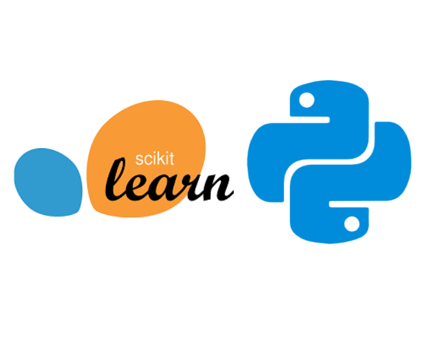
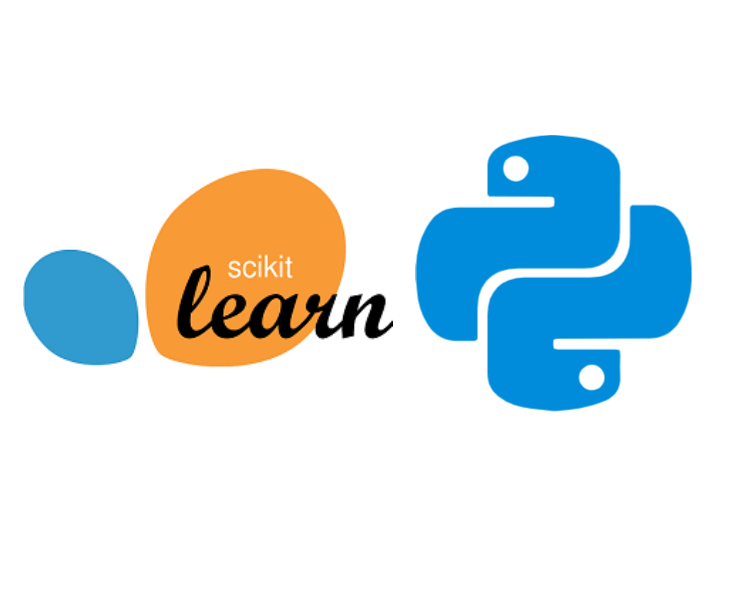

Decision Inteligence
We help organizations navigate complex business landscapes with Decision Intelligence—an advanced approach that combines data science, machine learning, and domain expertise to automate and optimize decision-making processes. Our solutions not only guide leaders to make informed decisions but also ensure that these decisions align with the long-term strategic objectives of the organization. By integrating predictive analytics, scenario planning, and real-time data analysis, KiE Square empowers businesses to stay ahead of the competition and respond to market changes dynamically.